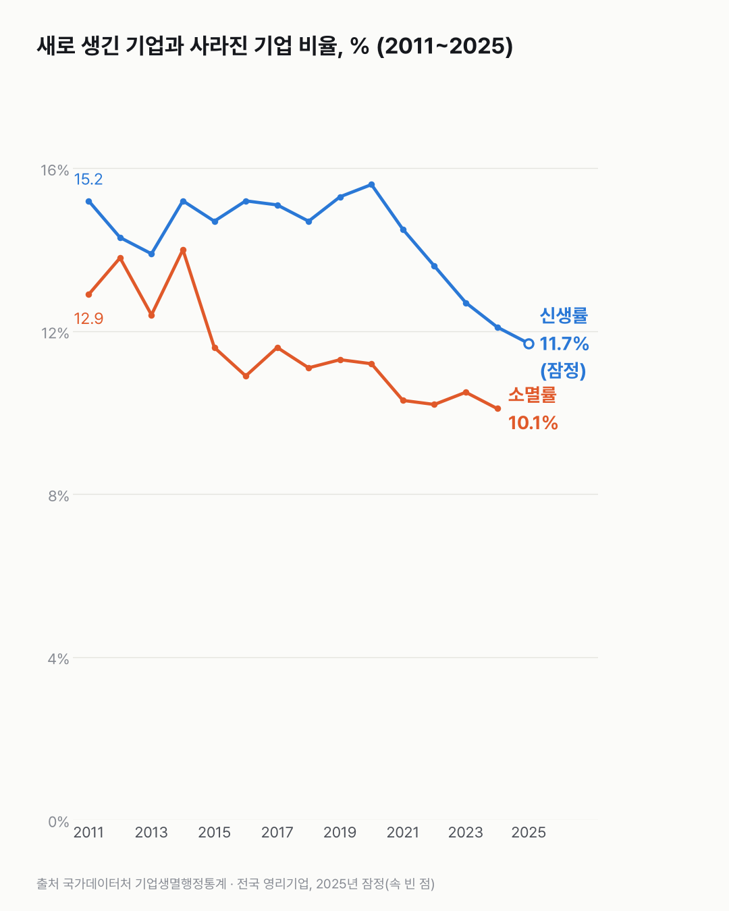
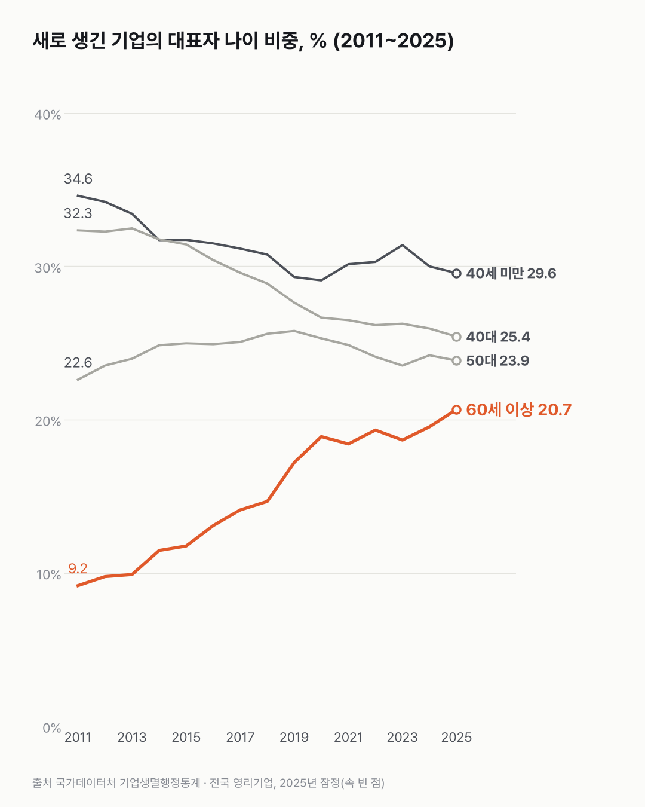

회사를 새로 여는 비율도 닫는 비율도, 통계가 생긴 뒤 가장 낮아요
새로 생기는 회사도 문 닫는 회사도 비율로는 가장 적어요. 새 회사 대표는 다섯 중 하나가 60세 이상이에요.

- 2025년 새로 생긴 기업 비율은 11.7%, 2024년 문 닫은 기업 비율은 10.1%예요. 둘 다 2011년 통계 작성 이후 가장 낮아요.
- 새로 생긴 기업은 2020년 106만 9천 개에서 2025년 90만 8천 개까지 5년 연속 줄었어요.
- 새 기업 대표 중 60세 이상은 2011년 9.2%에서 2025년 20.7%로 늘었어요.
경기가 안 좋다는 뉴스가 나오면 폐업 얘기가 따라 나와요. 그래서 문 닫는 쪽 숫자부터 찾아봤어요. 소멸기업은 2024년 76만 9천 개였고, 비율로는 통계가 생긴 뒤 가장 낮았어요. 2011년 소멸률은 12.9%였어요.
여는 쪽도 줄었어요. 2011년 신생률은 15.2%였어요. 신생기업 수는 2020년이 가장 많았고, 그 뒤 해마다 줄었어요. 그런데 활동기업은 계속 늘어 2011년 534만 개에서 2025년 775만 개가 됐어요.
가장 크게 바뀐 건 대표 나이예요. 대표가 60세 이상인 새 기업은 7만 5천 개에서 18만 8천 개가 됐어요. 2011년의 두 배 반이더라고요.
40대 대표 비중은 32.3%에서 25.4%로, 40세 미만은 34.6%에서 29.6%로 줄었어요. 2011년에도 지금도 40세 미만이 가장 크지만, 그 차이는 좁아졌어요.


열고 닫는 문이 둘 다 좁아진 사이, 활동기업 수만 계속 늘었어요. 그 안에 얼마나 오래된 회사들이 있는지가 다음으로 궁금해졌어요.
이 숫자는 어디서 왔나요
출처
어떻게 셌나요
- 설문이 아니에요. 행정 자료로 기업을 세는 통계예요.
- 활동기업은 그해 매출이나 상용근로자가 있는 영리기업이에요. 개인사업자도 들어가요.
- 신생률은 새로 생긴 기업을, 소멸률은 사라진 기업을 각각 활동기업 수로 나눈 값이에요.
- 2025년 값은 잠정치예요. 나중에 바뀔 수 있는 임시 숫자예요. 소멸은 1년 늦게 집계돼서 가장 최근 값이 2024년이에요.
- 대표자 나이는 새로 생긴 기업만 봤어요.
한계 4가지
이 데이터로 말할 수 없는 것
- 소멸이 줄어든 것을 '사업이 잘된다'로 볼 수 없어요. 국가데이터처는 폐업 비용 때문에 폐업을 미루는 '버티기'일 수도 있다고 했어요(보도).
- 2025년 값은 잠정치라 바뀔 수 있어요.
- 업종별 차이는 다루지 않아요. 대표자 나이 변화엔 인구 고령화 자체가 섞여 있어요.
- 새로 생긴 기업이 얼마나 살아남는지는 신생기업 생존율 글에서 다뤘어요.
새 글 나오면 받아 보기
피드 리더 앱에 이 사이트 주소를 한 번 넣어 두면, 새 글이 올라올 때 앱에 떠요. 가입이나 메일 주소는 필요 없어요.
받는 법 보기
- 피드 리더 앱을 하나 골라요. 새 글을 모아 보여 주는 앱이에요. 예를 들면 Feedly나 Inoreader가 있어요. 둘 다 무료고 웹·휴대폰에서 써요.
- 앱에서 '구독 추가'(+)를 누르고 아래 주소를 붙여 넣어요.
- 끝이에요. 새 글이 올라오면 앱 목록에 떠요.
https://protofu.github.io/opendata-insight/feed.xmlFeedly를 쓴다면 여기를 눌러 바로 추가할 수도 있어요.